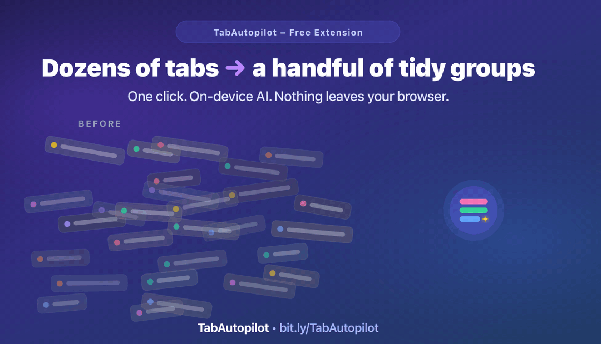
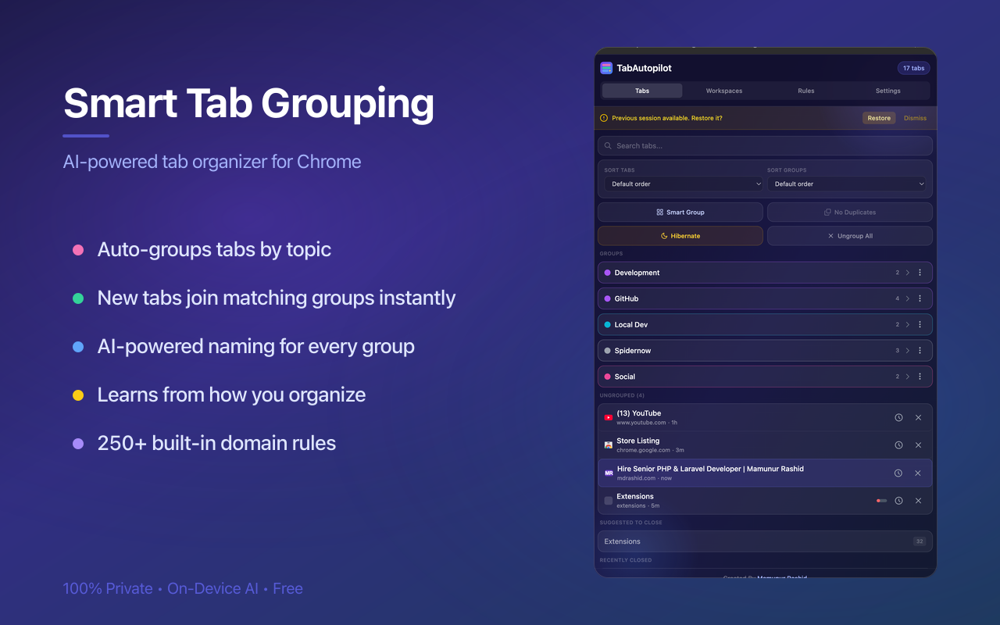
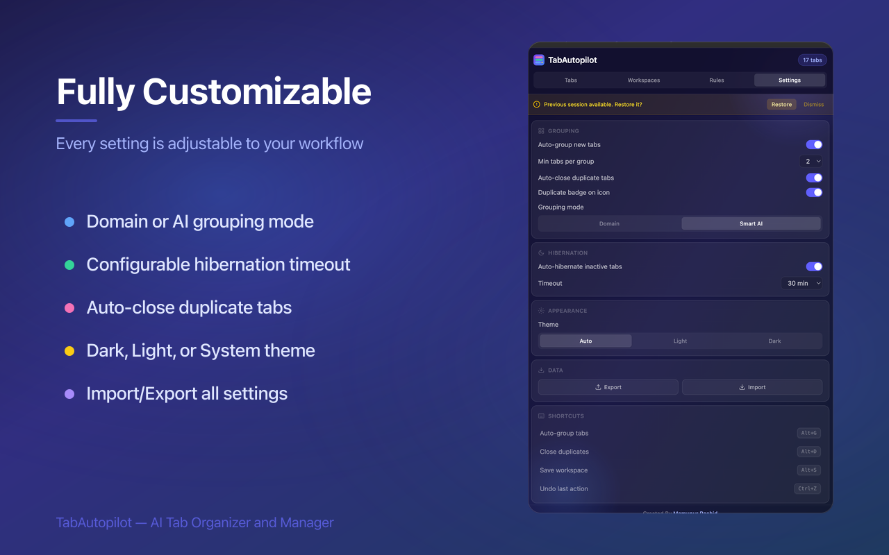

Smart tab manager, tab groups & tab snooze — for Chrome and Firefox
The tab manager that organizes itself. Auto-groups your tabs by topic, snoozes tabs for later, hibernates inactive tabs to free memory, closes duplicates, and restores whole sessions. Everything runs on your device.
TabAutopilot is also written Tab Autopilot. Free, no account, every feature included.

Reads page titles, not just domains, and sorts tabs into real Chrome and Firefox tab groups with meaningful names.
Close a tab now and it reopens on schedule — in an hour, next Monday, or any time you pick. Whole groups too.
A modern Manifest V3 tab suspender. Frees up to 95% of a tab's memory while keeping it in the tab bar.
Counts duplicates on the toolbar badge and clears them in one click, matching past tracking parameters.
Save and restore whole sessions with group names, colors and collapsed state. Unlimited, free, no account.
Move a tab to a different group once and the rule sticks — for that domain, forever. Opt-in, off by default.
Tab Autopilot ships as two native builds, not one cross-compiled compromise. Each uses its browser's real APIs, so grouped tabs are genuine Chrome tab groups and genuine Firefox tab groups.
| Chrome build | Firefox build | |
|---|---|---|
| Store | Chrome Web Store | addons.mozilla.org |
| Minimum version | Chrome 120 | Firefox 140 |
| Native tab groups | Yes | Yes (Firefox 139+) |
| UI surface | Side panel | Sidebar |
| Topic grouping engine | 350+ rules | 350+ rules |
| On-device AI group naming | Gemini Nano (Chrome 127+) | Rules only |
| Network requests | None | None at all |
| Snooze · hibernate · duplicates · workspaces | Yes | Yes |
| Per-site cache clearing | Yes | Global only |
Also runs on Edge, Brave, Opera, Vivaldi and Arc via the Chrome build — those use the rule engine, since Gemini Nano is part of Chrome itself. Safari is not supported.


No account. No server. No analytics. No ads. Categorization is a local rule engine running inside your browser; the Chrome build's optional AI is Chrome's own on-device Gemini Nano, and the Firefox build makes no network requests at all and is declared to Mozilla as collecting no data. Everything you save stays on your machine and is deleted when you uninstall. Read the full privacy policy.
Yes. The extension is published as TabAutopilot and is commonly written Tab Autopilot as two words. Both names refer to this same free tab manager for Chrome and Firefox.
Install TabAutopilot from the Chrome Web Store and press Alt+G, or click Smart Group in the side panel. All open tabs are organized into named, colored Chrome tab groups by topic. Turn on auto-grouping and every new tab is sorted as you browse.
Yes — a separate native build on addons.mozilla.org, requiring Firefox 140 or newer on desktop. It uses Firefox's own tabGroups and sidebar_action APIs rather than a compatibility shim.
Only the optional AI group-naming layer, which needs Chrome's built-in Gemini Nano, and per-site cache clearing, which Firefox's browsingData API cannot filter by hostname. Grouping, snooze, hibernation, duplicate closing, workspaces and usage stats are identical.
No. Categorization runs entirely on your device. The Chrome build's optional AI is Chrome's built-in Gemini Nano — part of the browser, not an external service. The Firefox build makes no network requests at all. No account, no analytics, no tracking in either build.
Yes — the Chrome build runs on any Chromium browser. On Opera, enable Chrome Web Store extensions first. Those browsers use the rule engine, since Gemini Nano is Chrome-only.
Yes. Every feature, unlimited workspaces, no premium tier and no account — on both browsers.